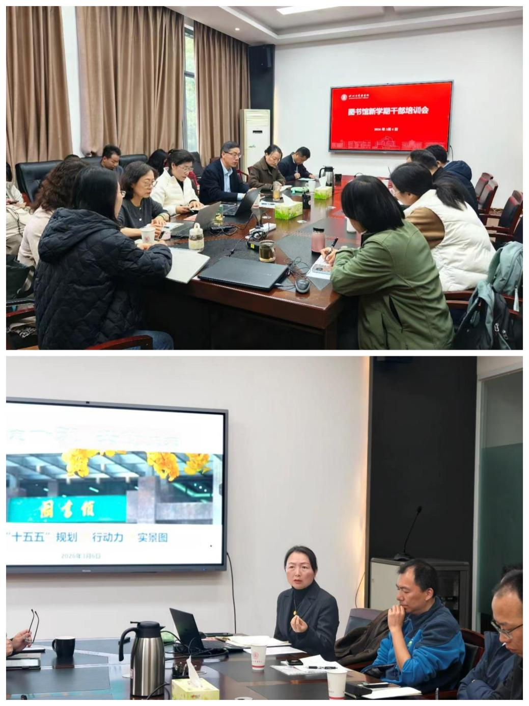

学院通知 · 科研创新
新学期，新启航 图书馆全方位焕新，以AI赋能智慧服务迎接新学期
发布时间：2026-03-09 14:32:52
春风送暖，书香满园。2026年新学期伊始，四川大学图书馆秉承“师生至上、服务至上、发展至上”的宗旨，在寒假期间完成多项服务升级，以焕然一新的馆舍环境、全面升级的智慧服务和多元融合的“人工智能+”育人生态，正式拉开春季学期序幕，为全校师生营造舒适学习空间，赋能科研创新与学术成长。 扎实起步：新学期工作检查与干部培训会召开 3月5日上午，馆领导带队深入文理图书馆、工学图书馆、医学图书馆、江安图书馆，检查新学期各项准备工作，重点查看了阅览环境、设施运行及安全保障情况，确保以最佳状态迎接师生。3月6日上午，图书馆召开新学期干部培训会，围绕干部素养和能力提升 与图书馆“十五五”事业发展规划进行研讨，进一步提升管理服务效能，为全年工作开好局、起好步。 馆舍焕新，细节之处见用心 新学期到来前，三校区图书馆完成深度清洁与设施检修。同时，对馆内绿植进行了精心养护，工学馆、江安馆“开心花园”里的寄养绿植健康越冬，新学期一批新绿植已就位，欢迎同学们认养。江安图书馆阅览空间部分沙发已上新，以全新面貌迎接师生。 智慧门户，AI赋能知识服务新体验 2月9日，全新的四川大学智慧图书馆门户新春焕新上线。此次升级实现AI赋能精准推荐，基于用户需求画像实现“知识找人”；打造专属智慧书房，适配不同学术场景；提供7×24小时人智协同服务，AI馆员与专业馆员互补；智能网关一键直达，简化学术资源访问流程；构建覆盖全周期的学友式服务，以AI技术重构知识服务体系。 “AI+X”深度融合，构建分层进阶的AI素养教育 图书馆将全面推动“人工智能+”育人新生态建设。围绕前沿技术趋势，聚焦优势学科，打造多层次、递进式的“AI+X”学科交叉活动，引导学生从通识认知迈向专业深度融合。同时，将继续举办“第二届XR空间设计大赛”，计划首次联合省内外多所高校共同发起，打造跨校际、跨学科交流平台。 经典焕新，书香浸润校园 2026年“第九届四川大学‘经典守护者’中华经典美文诵读大赛”和“2026年度四川大学‘好未来阅读之星’评选”工作将于近期启动。诵读大赛将持续推进平台智慧化提升，增设地方图书馆赛道；阅读之星评选将扩大覆盖面、优化标准，发挥示范作用。2026年是全国《全民阅读促进条例》实施第一年，图书馆将以此为契机，深入推进阅读推广体系建设。 学科服务，嵌入式助力科研全流程 学科馆员将持续深化与院系对接，开展嵌入式教学、知识产权信息咨询、科研情报支撑等服务，为学院、专业、班级提供定制专场讲座。本学期还将举办“知识产权宣传月系列活动”，包括第六届四川大学知识产权挑战赛、知识产权系列讲座等，持续提升师生知识产权信息素养。 社科文献添新彩，重点学术丛书入藏 在江安图书馆二楼巴蜀文库正式上架一批重点社科类学术丛书，涵盖历史学、考古学、文学及艺术史等多个学科领域，包括《五四新文化运动研究资料汇编》《民国金石史料丛编》《中国出土金银器全集》《明清孤本戏曲选本丛刊·第二辑》《容庚学术著作全集》等。这批文献集中入藏，显著提升了相关学科馆藏资源的系统性与学术深度，便利文科师生查阅利用。 新学期，新愿景。四川大学图书馆将继续坚持以师生需求为导向，不断提升资源保障能力、空间服务水平和智慧服务效能，更好服务学校人才培养、科学研究和文化传承创新。
